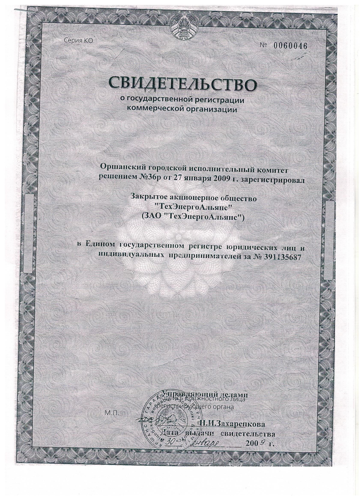

ЗАО "ТехЭнергоАльянс"
г. Орша, ул. Владимира Ленина, д.67.
Тел/Факс (8-0216) 52-57-74, 8(029) 211-64-05
e-mail: tea2116405@tut.by
ЗАО «ТехЭнергоАльянс» предлагает следующие услуги:
- Электрофизичесие измерения (ЭФИ)
- измерения напряжения прикосновения и шага в животноводческих помещениях ( коровниках, телятниках, овчарнях, конюшнях, свинарниках) .Проводится для проверки устройств защиты сельскохозяйственных животных- крупнорогатого скота, свиней, лошадей, овец, коз от поражения электрическим током.
- Измерение сопротивления заземляющих устройств . Этот вид измерений призван подтвердить соответствие заземляющих устройств ТНПА. Проводится с обязательным замером удельного сопротивления грунта;
- Испытание устройств молниезащиты. Проверяем систему молниезащиты и громоотводы;
- Измерение и испытание сопротивления изоляции (в том числе в лифтах, кранах и грузоподъемных механизмах). Кабель должен выдерживать подачу на него повышенного напряжения от 500 до 2500В. При этом сопротивление изоляции должно быть не менее 500кОм;
- Проверка цепи между заземленной электроустановкой и элементами заземленной установки. Данный вид испытаний должен подтвердить или опровергнуть факт того, что все оборудование, которое должно быть присоединено к заземляющей шине к ней подключено;
- Испытание сопротивления цепи «Фаза — Нуль». Этот вид испытаний призван подтвердить, что номинал и характеристика автоматического выключателя выбраны корректно. Сопротивление петли дает ожидаемый ток короткого замыкания. Этот ток должен быть выше диапазона срабатывания автоматического выключателя согласно его характеристике;
- Испытание устройства защитного отключения. УЗО реагируют на наличие разности токов между фазными и нулевым проводниками. С помощью прибора ПЗО имитируется наличие тока утечки на землю. При этом фиксируется ток и время за которое отработало УЗО;
- Проверка автоматических выключателей в электроустановках до 1000В. Надежная защита электрических цепей данными электрическими аппаратами обеспечивается только в том случае, если автоматический выключатель находится в исправном техническом состоянии, а его фактические рабочие характеристики соответствуют заявленным.
- Выполнение ремонтноэлектромонтажных работ. Проведение текущих ремонтов электроустановок.
- Выполнение технического обслуживание и текущего ремонта трансформаторных подстанций.
- Оказание услуг по организации эксплуатации электроустановок до и выше 1000В ( лицо ответственное за электрохозяйство).
- Составление схем. Часто бывает, что распределительные устройства не комплектованы комплектом сопроводительной документации (схемами). В этом случае осуществляется поиск всех потребителей и составление схемы.
В состав ЗАО «ТехЭнергоАльянс» входит лаборатория электрофизических изменений (ЛЭФИ) аккредитованная в Национальной системе аккредитации Республики Беларусь по международному ГОСТ ISO/IEC 17025-2019/ Измерения проводятся специалистами лаборатории электрофизических измерений, имеющими необходимую квалификацию для проведения работ. Мы используем только поверенное и откалиброванное оборудование и гарантируем качество и достоверность результатов нашей работы. На основании измерений выдается технический отчет.
Периодичность и объем испытаний определяется ТКП181-2009, техническими паспортами и утверждается в графике, составленным ответственным за электрохозяйство.
Выезд специалиста на объект для определения стоимости работ производится бесплатно. Стоимость работ зависит от объемов. Действует система скидок и понижающих коэффициентов.
У нас индивидуальный подход к каждому заказчику!
Будем рады сотрудничеству с Вами!
Для связи с нами нажмите одну из следующих ссылок
+375(29)211-64-05 Шпаковский Григорий Константинович, директор,
8(0216)52-57-74,
+375(29)511-14-01 (Viber) (WhatsApp) (Telegram).
Электронная почта: tea2116405@tut.by



Х